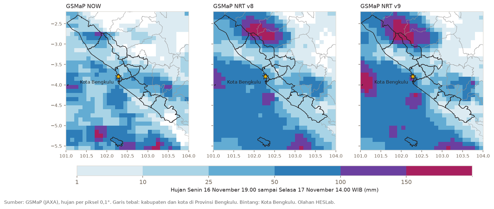

Selasa 17 November 2026, banjir merendam permukiman di enam kecamatan Kota Bengkulu, dengan air setinggi lutut sampai 1,5 meter. Hujan turun sejak Senin malam. Tulisan ini membaca hujan malam itu dengan tiga produk satelit GSMaP yang terbit cepat (NOW, NRT v8, dan NRT v9). Menurut satelit, banjir ini datang dari hujan yang turun hampir tanpa henti selama lebih dari 15 jam, ditutup hujan deras pada Selasa pagi, bukan dari satu hujan ekstrem. Hujan terlebat di Provinsi Bengkulu malam itu justru jatuh di pedalaman utara, di perbatasan Lebong dan Bengkulu Utara.

Apa yang tercatat di lapangan
Hujan deras mulai turun Senin malam, 16 November, dan masih turun saat ANTARA menurunkan beritanya Selasa pukul 13.26 WIB. Pada pendataan awal, empat kelurahan terendam: Sawah Lebar, Pagar Dewa, Pekan Sabtu, dan Dusun Besar. Di Gang Mawar 2, Kelurahan Pagar Dewa, air mencapai sekitar 1,5 meter. Seorang warga Pagar Dewa meminta pemerintah menangani sungai yang meluap setiap kali hujan deras (ANTARA).
Pendataan sementara BPBD Kota Bengkulu sampai Selasa malam mencatat banjir di enam kecamatan. Yang terparah adalah Kecamatan Ratu Agung, dengan 433 KK (1.732 jiwa) terdampak di Kelurahan Tanah Patah dan 287 KK (976 jiwa) di Tebeng, dan Kecamatan Muara Bangkahulu, dengan 322 KK (1.226 jiwa) di Rawa Makmur Permai. Kecamatan lain yang terdampak adalah Singaran Pati, Ratu Samban, Selebar, dan Sungai Serut. Jumlah dari angka yang sudah tercantum, di luar Sungai Serut yang masih didata, sekitar 1.400 KK atau 5.200 jiwa. BPBD menyiagakan personel dan perahu karet. Longsor terjadi di Perumahan Citra Gading Residence, Pagar Dewa, dan pohon tumbang di Kecamatan Kampung Melayu (Rakyat Bengkulu). Petugas juga mengevakuasi warga, termasuk seorang bayi, di Kemiling Permai, dan Wisma Haji di Pekan Sabtu ikut terendam. Enam hari sebelumnya, 11 November, Wali Kota Bengkulu menyatakan sejumlah titik rawan banjir sudah dibenahi dan meminta waktu untuk membenahi kota (Satujuang).
Di luar kota, jalur Molek, akses utama ke Desa Lebong Tandai, Kecamatan Napal Putih, Kabupaten Bengkulu Utara, tertimbun longsor di dua titik. Longsor kedua terjadi Senin malam, 16 November (RBTV). BNPB juga mencatat banjir dan abrasi di Kabupaten Seluma dalam laporan 17 November (Kontan).
Apa kata satelit
Satu piksel GSMaP berukuran 0,1 derajat, sekitar 11 × 11 km. Kelurahan yang terendam berada di dekat sudut empat piksel, dan sebagian piksel itu berupa laut. Karena itu hujan Kota Bengkulu di sini adalah rata-rata tujuh piksel yang menyentuh wilayah kota, dibobot menurut luas bagian piksel yang berada di dalam kota.
| Hujan Senin 19.00 sampai Selasa 14.00 WIB (mm) | NOW | NRT v8 | NRT v9 |
|---|---|---|---|
| Kota Bengkulu, jumlah | 40,4 | 45,4 | 77,5 |
| Kota Bengkulu, jam terbesar | 11,5 | 11,1 | 24,9 |
| Kabupaten Bengkulu Tengah, jumlah | 25,4 | 26,2 | 27,8 |
| Kabupaten Lebong, jumlah | 14,6 | 62,5 | 85,7 |
| Kabupaten Muko Muko, jumlah | 35,3 | 50,8 | 72,3 |
| Kabupaten Bengkulu Utara, jumlah | 24,7 | 31,1 | 41,0 |
Senin malam. Hujan di Kota Bengkulu mulai pada jam yang berakhir pukul 19.00 atau 20.00 WIB. NRT v9 mencatat 25 mm dalam jam yang berakhir pukul 20.00, sedangkan NRT v8 mencatat 6 mm dan 5 mm pada dua jam itu, dan NOW hampir tidak mencatat apa-apa. Ketiga produk berbeda jauh untuk awal hujan ini.
Senin malam sampai Selasa subuh. Sejak pukul 20.00 sampai 06.00 WIB, ketiga produk sepakat: hujan turun setiap jam, kurang dari 1 sampai 4 mm per jam, tanpa jeda. Hujan ringan yang panjang ini membuat tanah dan saluran sudah basah sebelum hujan pagi datang.
Selasa pagi. NRT v8 dan v9 mencatat jam terbasah kedua pada jam yang berakhir pukul 07.00 WIB, 11 mm dan 16 mm. NOW mencatat puncak yang serupa, 11,5 mm, satu jam kemudian. Setelah pukul 09.00 hujan melemah menjadi kurang dari 2 mm per jam dan berhenti sekitar pukul 14.00, sejalan dengan berita yang menyebut hujan masih turun pada tengah hari.

Peta memperlihatkan bahwa Kota Bengkulu tidak berada di inti hujan malam itu. Menurut NRT v8 dan v9, hujan terbanyak di daratan Provinsi Bengkulu jatuh di piksel 2,75° LS 101,95° BT, di perbatasan Bengkulu Utara dan Lebong dengan Kabupaten Merangin, Jambi: 162 mm menurut NRT v8 dan 248 mm menurut NRT v9. NOW mencatat 105 mm di piksel sebelahnya. Rata-rata Kabupaten Lebong 63 sampai 86 mm menurut NRT, tetapi hanya 15 mm menurut NOW. Di Kabupaten Bengkulu Tengah, yang berbatasan dengan Kota Bengkulu di sisi timur, hujannya lebih kecil daripada di kota, 25 sampai 28 mm menurut ketiga produk.
Apa artinya
Menurut satelit, hujan Senin malam sampai Selasa siang di Kota Bengkulu berjumlah 40 sampai 78 mm, tergantung produk, lebih besar daripada di Bengkulu Tengah di sebelah timurnya. Jumlah itu tergolong hujan sedang sampai lebat untuk satu hari, dan jam terbasahnya 11 sampai 25 mm. Yang menonjol adalah lamanya: lebih dari 15 jam hujan tanpa jeda, lalu hujan deras pada Selasa pagi ketika tanah dan saluran sudah penuh. Banjir yang merendam ribuan jiwa dari hujan sebesar ini menunjukkan bahwa saluran dan sungai di kota tidak cukup untuk hujan panjang seperti itu. Warga menyebut sungai yang meluap, dan BPBD mengimbau warga membersihkan saluran dari sampah. Satelit tidak dapat memastikan mana yang lebih berperan.
Hujan yang jauh lebih besar jatuh di pedalaman utara, dan longsor menimbun jalur Molek di Bengkulu Utara pada malam yang sama. Di Lebong, NOW mencatat 15 mm sedangkan NRT 63 sampai 86 mm. Untuk hujan Senin malam, angka NOW saja akan meremehkan hujan di pedalaman utara.
Batasan
- Nilai adalah hujan per piksel 0,1° atau rata-rata beberapa piksel dari satelit. Hujan di satu titik bisa jauh lebih besar.
- GSMaP NOW hanya memakai paruh pertama tiap jam, sehingga hujan singkat bisa terlewat atau tercatat terlambat.
- Ketiga produk tidak dikoreksi dengan pos hujan. Produk Standard untuk tanggal ini belum tersedia saat tulisan ini dibuat.
- Angka warga terdampak adalah pendataan sementara BPBD yang dikutip media dan bisa berubah.
- Peringatan resmi cuaca dan banjir dikeluarkan oleh BMKG dan BPBD.
Rujukan
- ANTARA Bengkulu, 17 November 2026. Empat wilayah di Kota Bengkulu terendam banjir pasca hujan deras.
- Rakyat Bengkulu, 17 November 2026. Banjir rendam 6 kecamatan, ribuan warga terdampak.
- Satujuang, 17 November 2026. Enam hari usai wali kota minta waktu benahi drainase, Kota Bengkulu alami banjir.
- RBTV, 17 November 2026. Dua titik jalur Molek tertimbun longsor, pasokan sembako Lebong Tandai terancam.
- Kontan, 17 November 2026. Update bencana 17 November 2026, ratusan KK terdampak banjir di Kalbar dan Bengkulu.
- JAXA. GSMaP NOW, NRT v8, dan NRT v9 (tanpa koreksi pos hujan), per piksel, diolah HESLab.